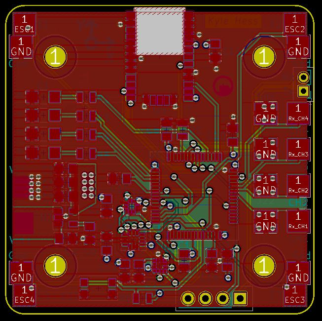
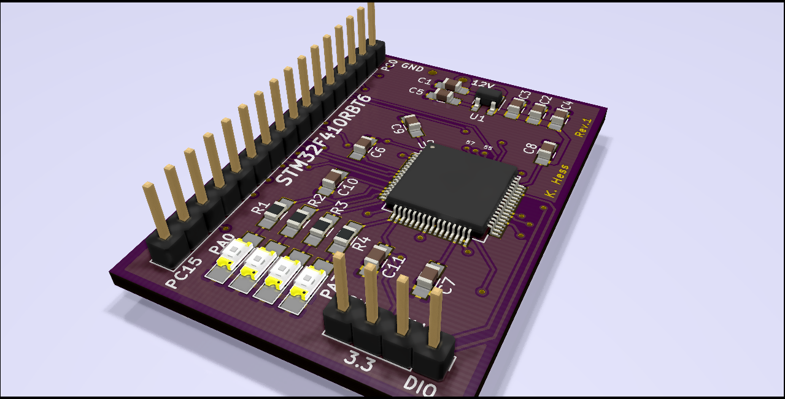
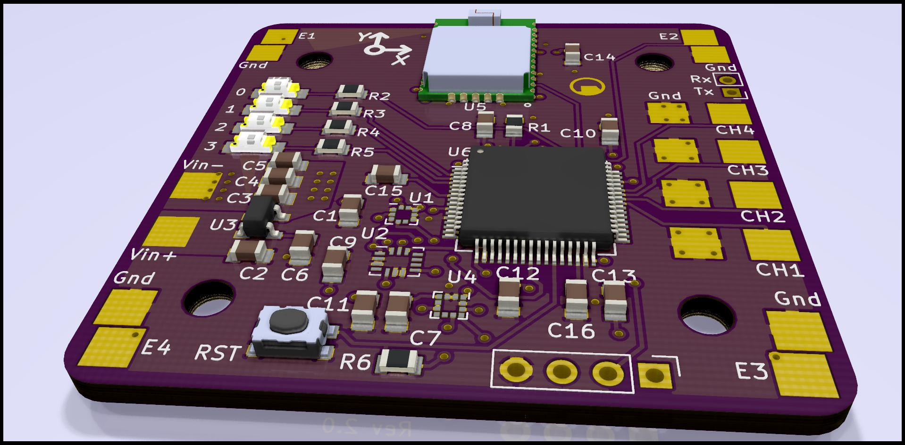
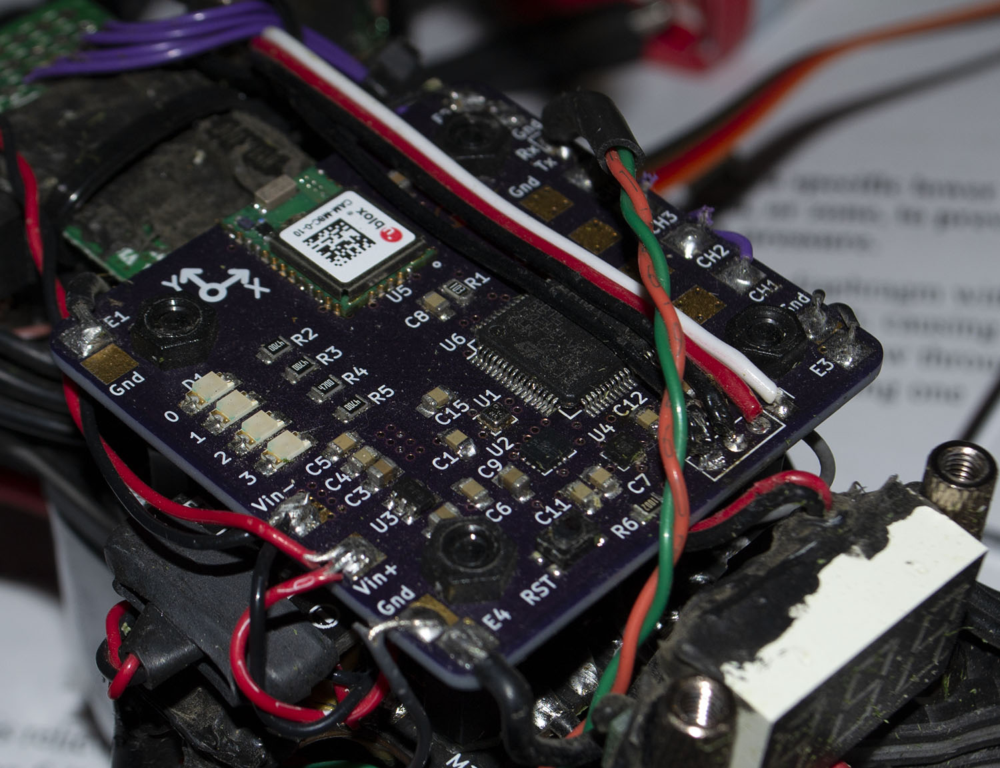

This project was intended as a challenge to build a custom flight controller for a racing-style quadcopter. The controller was designed with the form factor of the Holybro Kopis 2 quadcopter in mind.
This flight controller has been designed as a sensor suite for various sensor-fusion possibilities to achieve various control solutions for the aircraft. The high-level design goals included: stable rate-control of all three axes, Oneshot125 ESC protocol, 4-Channel RC receiver input, and easily tunable control parameters.
The first revision of this controller was basically just a breakout/development board for the STM32F4 microcontroller. This was just used to get some experience programming and debugging the new processor, and familiarizing myself with the all of the peripherals and features.
 The second revision of the controller incorporated all of the components I had hoped to utilize in the final design. All sensors were included as well as all the necessary IO. Additional IO was added in the form of direct UART port access. The hope here was that eventually a wireless receiver could be installed and communicate with the aircraft while in flight.

Once completed, this board was mounted on the quadcopter frame along with the pre-purchased motor ESCs, power delivery board, motors, RC receiver, and a voltage measurement device.
After significant debugging of the ECS protocol (which is essentially just a PWM signal) tuning of the controller PID gains could begin. At this point the magnetometer was ignored as it is far to sensitive to provide reliable data in differing environments.
The existing control algorithm is only focused on rate control. The contoller reads the three rate gyros and filters the signal via oversampling and an IIR filter. The motor control signals are then modulated to keep the gyro rate readings at a setpoint given by the RC receiver (ideally). This is a very raw control scheme but allows for very direct control of the quadcopter without relying on the algorithm too much.
-IMU sample rate: 5 kHz
-Control loop rate: 1 kHz
-Baro sample rate: 50 Hz
-GNSS update rate: 1 Hz
-Battery: 4s LiPo, 1.5 Ah
-Motors: 2400 KV
The final revision is still a work-in-progress. The PCB layout can still be optimized and made slightly more modular as well as incorporating a wireless UART interface instead of the existing wired port.
In order to change parameters within the flight controller, a Windows-based UI was developed with C# to send/receive messages from the quadcopter. The controller's UART port is converted to a USB interface and connected to the PC. Then the UI can conncet to the COM port to communicate with the device.
Each message sent to the connected PC has the following structure:
[Start (1 byte), message counter (1 byte), 7 floating point values (28 bytes), status byte A (1 byte), status byte B (1 byte), checksum (1 byte)]
Each message sent to the flight controller from the PC must have the following structure:
[0x7F, command byte, number of data bytes (0 - 250), data bytes, checksum, 0xF7]
Message formats are still in development and are added as they are needed.
{kind=link}
{kind=link}
{kind=link}
{kind=link}
{kind=link}